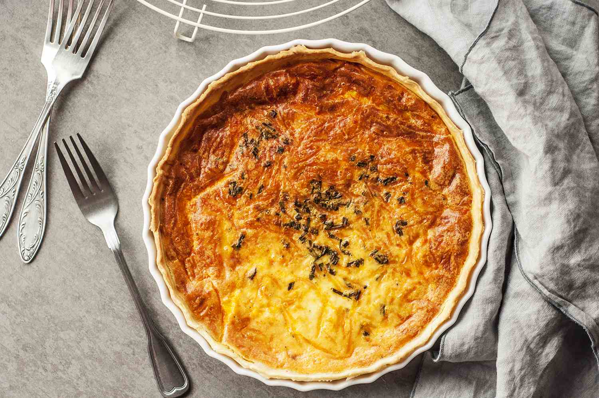

Cheese Quiche

It doesn't get much better than this easy, cheesy bacon quiche. Whether you're looking for a satisfying breakfast or a fun idea for breakfast-for-dinner, this bacon quiche recipe will satisfy everyone at your table.
Ingredients
- Pie Crust
- Bacon Bits
- Half cup of diced Onion
- Shredded swiss and grated parmesan cheese
- 4 Whole lightly beaten eggs
- 1 Cup of half and half
Steps
- Preheat the oven to 400 degrees F (200 degrees C).
- Place unthawed pie crust in a pie pan on a baking sheet. Mix bacon, chopped onion, and both cheeses in a medium bowl. Pour this mixture into the crust.
- Mix eggs and half and half in a bowl until blended; pour the egg mixture over the cheese mixture.
- Bake in preheated oven for 15 minutes. Reduce heat to 350 degrees F (175 degrees C) and bake until the top of the quiche begins to turn golden brown, an additional 35 minutes.